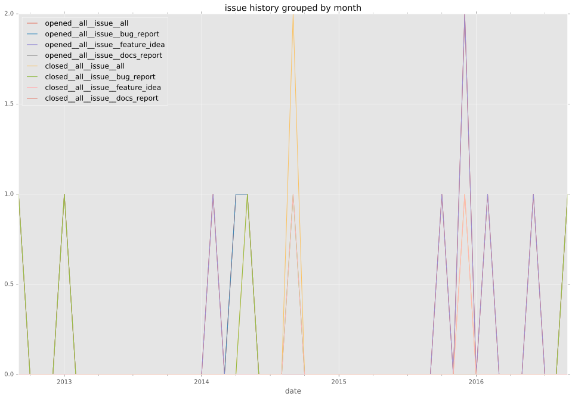
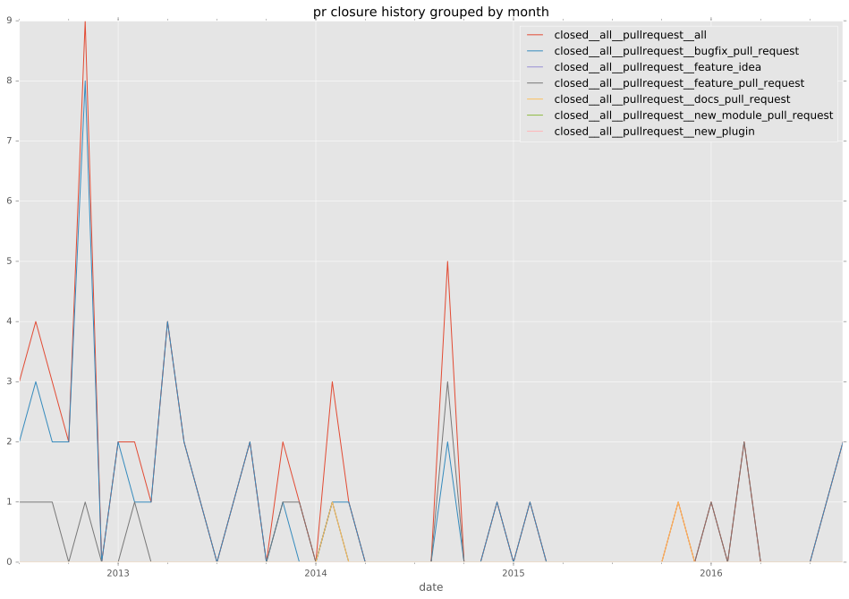

authors
maintainers
- ansible
contributors
- lorin : 18 commits
- b6d : 17 commits
- abadger : 16 commits
- elventear : 12 commits
- drob : 9 commits
- mscherer : 7 commits
- mavimo : 7 commits
- mpdehaan : 5 commits
- jpmens : 5 commits
- cocoy : 5 commits
- kahlil-hodgson : 4 commits
- yteraoka : 2 commits
- mgedmin : 2 commits
- jctanner : 2 commits
- Ernest0x : 2 commits
- mjschultz : 1 commits
- kustodian : 1 commits
- artursvonda : 1 commits
total issue counts
feature pull request: 15
pullrequest: 60
docs pull request: 2
bugfix pull request: 43
feature idea: 5
issue: 11
bug report: 6
issue history

pullrequest history

days open by issue type
bugfix pull request
count: 62
std: 34.8665810913
min: 0
max: 265
median: 0.5
mean: 9.16129032258
all
count: 88
std: 76.3452524427
min: 0
max: 592
median: 1.0
mean: 20.5113636364
pullrequest
count: 0
std: nan
min: nan
max: nan
median: nan
mean: nan
docs pull request
count: 4
std: 2.88675134595
min: 0
max: 5
median: 2.5
mean: 2.5
feature pull request
count: 15
std: 155.422465741
min: 0
max: 592
median: 1.0
mean: 55.0
feature idea
count: 1
std: nan
min: 230
max: 230
median: 230.0
mean: 230.0
issue
count: 0
std: nan
min: nan
max: nan
median: nan
mean: nan
bug report
count: 6
std: 68.2778636651
min: 0
max: 168
median: 0.0
mean: 28.6666666667
closures grouped by total days open